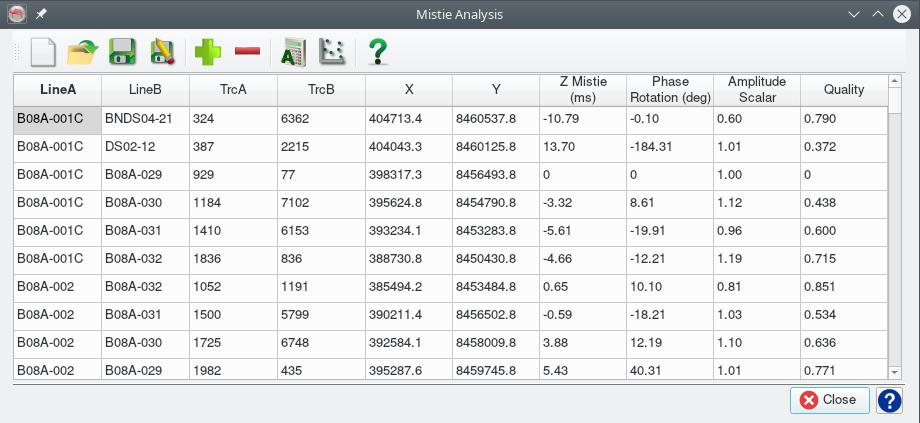

This plugin, for the open source seismic interpretation platform OpendTect Version 6.4.0 or later, allows creation and editing of a file with Z shift, phase rotations and amplitude scaling corrections for 2D and 3D seismic in an OpendTect survey/project. The plugin also includes an attribute (Mistie Application) that will apply the corrections.
In an ideal world we would be given 2D seismic data that has consistent Z, phase and amplitude scales. In the real world this doesn't always happen and 2D seismic interpretation projects accumulate inconsistencies as more data is added. The concept implemented by this plugin is the interpreter builds/maintains the correction table as they work through the data. The virtual corrected seismic from the Mistie Application attribute can be interpreted on the fly or the interpreter can generate a new adjusted dataset and interpret that.
Future planned enhancements:
- Add an option to apply the Z shifts to an existing seismic interpretation
Description
The plugin provides components to:
- Estimate misties from seismic data
- Analyse the misties and estimate corrections to minimize the misties in a least squares sense
- Edit/Maintain a set of mistie corrections
- Attribute to apply the corrections.
There are two alternative workflows to build a mistie correction file:
- Estimate the misties from the data and compute a mistie correction file in the Mistie Analysis dialog
- Manually build the mistie correction file in the Mistie Correction Editor
Mistie Analysis
The plugin adds a "Mistie Analysis" item to the Analysis main menu. Selecting the item opens the Mistie Analysis dialog:

Actions associated with the toolbar buttons are:
| ICON | DESCRIPTION |
|---|---|
 |
Open the Mistie Estimation dialog to estimate misties from the seismic data. Existing contents of the mistie table are erased. |
| Load mistie estimates from a previously saved file. Existing contents of the mistie table are erased. | |
 |
Save the current mistie estimates. If the current misties were loaded from a file then that will be overwritten, otherwise user will be asked to provide a new file name. |
 |
Prompts for a file and saves the current mistie estimates. |
| Prompts for another mistie file and merges the results with the mistie set currently active in the tool optionally keeping or replacing common items. | |
 |
Open the Correction Calculation dialog. |
 |
Opens a web browser and displays an interactive dashboard report for the current misties and correction set active in the tool. |
Mistie Estimation
The toolbar item in the Mistie Analysis dialog opens the following dialog to estimate misties from the seismic data using the method described by Bishop and Nunns (1994):

The user can:
- Select the data type (attribute) and which lines to include in the analysis
- Include and select a 3D seismic volume to include in the analysis
- Specify the trace interval along 2D lines to estimate the 2D to 3D misties, the average mistie is assigned to the 2D to 3D tie
- Limit the maximum time-shift or mistie to consider
- Specify a Z window for the cross correlation of traces at line interections
The Apply button will initiate the estimation of the misties, when complete results are displayed in the Mistie Analysis dialog. Clicking the icon will generate a Mistie Report with histograms and scatterplot of the mistie estimates for review.
Mistie Correction Calculation
The toolbar item in the Mistie Analysis dialog opens the following dialog to compute mistie corrections that minimize the root mean square (RMS) mistie after correction:
The user can:
- Optional select one or more line(s) to use as a reference. Reference lines will have Z, phase and amplitude corrections constrained to be 0, 0, 1 respectively and corrections will be computed only for the non-reference lines. Selecting no lines will distribute corrections across all lines.
- Restrict calculation to intersections with a correlation coefficient (tie quality) above a minimum threshhold. The intersection quality can vary from 0.0 (no tie) to 1.0 (perfect tie). A cut-off of 0.5-0.6 should prevent unreliable mistie estimates being used to compute corrections.
- Control the maximum number of iterations used to calculate the corrections - the default value should be adequate in most circumstances.
- Control the convergence criteria that stops the iteration used to calulate the corrections - iterations stop if the change in the RMS mistie (after applying corrections) between successive iterations is less than the threshhold. Thresholds exist for the Z, phase and amplitude corrections. The default values should be adquate in most circumstances.
The calculated corrections will be displayed in a new table dialog:
The toolbar buttons can be used to save the corrrections to a disk file.
Mistie Report
The toolbar item in the Mistie Analysis dialog generates and displays in the system web browser a graphical, html format dashboard of the mistie anaysis and correction calculation results. This includes tabulated data, histograms and a 3D scatterplot. Here is an example of a mistie report.
Mistie Correction Editor
The plugin adds a "Mistie Corrections" item to the Survey-Manage main menu. Selecting the item opens the Mistie Correction Editor. This tool can be used to manually create mistie correction files or modify files generated by the Mistie Correction Calculation.

The editor has toolbar buttons to:
| ICON | DESCRIPTION |
|---|---|
|
Create a mistie correction set with all the 2D lines in the project (with default corrections that make no change to the data). Existing contents of the mistie table are erased. |
| Load mistie corrections from a previously saved file. Existing contents of the mistie table are erased. | |
|
Save the current mistie corrections. If the current corrections were loaded from a file then that will be overwritten, otherwise the user will be asked to provide a new file name. |
|
Prompts for a file and saves the current mistie corrections. |
| Merge another mistie correction set file with the current set, optionally keeping or replacing the existing corrections where there is duplicate line/dataset names. |
Within the editor it is possible to:
- Add new lines/datasets and associated corrections
- Edit existing corrections
- RightMouseButton click on a row brings up a menu to insert or delete selected row(s)
- Limited clipboard copy and paste is available
You can include corrections for a particular 3D seismic volume by using a line/dataset name of the form "3D_XXXX" where the "XXXX" is the volume name, eg note the "3D_pstm" in the above figure. Multiple unique "3D_XXXX" entries are allowed to specify corrections for different 3D volumes in the project.
If a line doesn't need a correction it can be omitted from the set and default (no change) corrections will be assumed when the Mistie Application attribute is applied. A message (which can be safely ignored) is added to the log file when this occurs.
The name in the line/dataset column must exactly match the project line name.
Mistie Application Attribute
The plugin adds a "Mistie Application" attribute to the list of OpendTect attributes.

The attribute parameters include:
- The input seismic volume to be corrected
- A file with the mistie correction set to apply
- Which corrections to apply
When the attribute is displayed the shift, phase rotation and amplitude scalar for the line is read from the correction file and applied.
Notes
- The default file extension for saved mistie estimates is "mistie"
- The default file extension for saved mistie corrections is "miscor"
- The default file location for all files is the Misc folder in the OpendTect survey/project folder
- All files are in a simple text format which can also be modified using a text editor